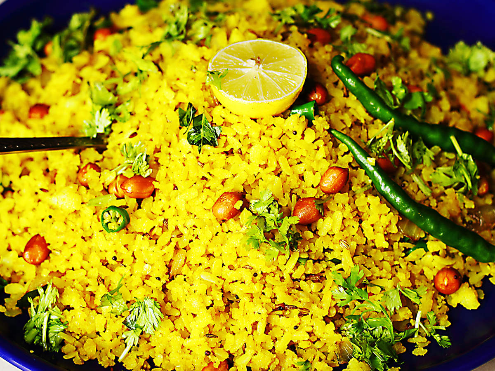

Poha

What is Poha?
Similar to how Idli and Upma are traditional breakfast recipes of Southern India, Poha is traditional and widely preferred breakfast recipe in Western states of India. This recipe is known as Pohe in Maharashtra and Poha in Gujarat and follows the same preparation method with poha (rice flakes) being the main ingredient. Since chopped potato pieces are also usually added to this recipe, this healthy breakfast is also referred as Aloo Pohe and Batata Poha in Maharashtra and Gujarat respectively.
This Poha Recipe with step by step photo guide makes it extremely easy to make it at home and also provides tips about how to give it your preferred regional touch
ingredient
- 2 cups thick Poha (rice flakes)
- 1 medium Onion, finely chopped (approx. 1/3 cup
- 1 small Potato, peeled and finely chopped (approx. ½ cup)
- 1/3 teaspoon Mustard Seeds
- 1/2 teaspoon Cumin Seeds
- 8-10 Curry Leaves
- 1 Green Chili, finely chopped
- Salt to taste
- 1/4 cup Pomegranate Seeds, optional
- 2 tablespoons finely chopped Coriander Leaves
Let's cooke shall we!
- Take poha in a large strainer.
- Wash it 1-2 times by gently swifting them with your fingers under running water. Drain the excess water through a strainer. Sprinkle salt and sugar over it, mix/toss well and keep aside.
- Heat 2-tablespoons oil in a pan. Add mustard seeds; when they start to splutter, add cumin seeds, green chilies, curry leaves, peanuts and a pinch of asafoetida. Allow them to sizzle until chilies turn crisp for approx. 30-40 seconds.
- Add chopped onions and sauté until onions turn translucent.
- Add chopped potatoes and salt (add salt only for potatoes).
- Mix well and cook covered until potatoes turn tender. This will take around 3-4 minutes. Stir in between occasionally to prevent sticking.
- Add turmeric powder.
- Add soaked poha.
- Cook for 2-3 minutes. Add lemon juice, dry grated coconut and finely chopped coriander leaves.
- Mix well and turn off the flame. Batata poha is ready for serving.